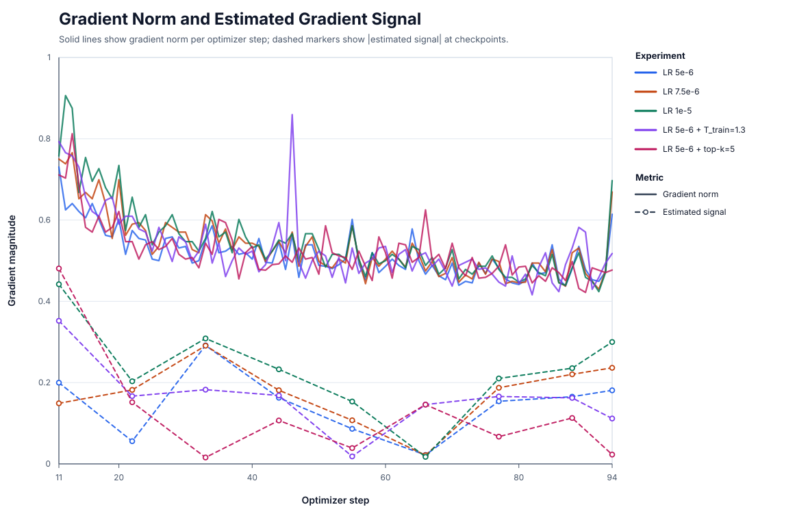
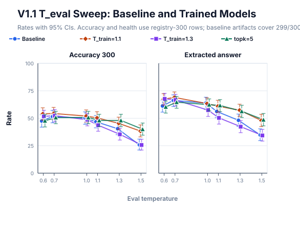

Self-distillation on math: training recipe
Last time we established baselines for Qwen3.5-4B on competitive math. It's now time to see how we will improve on these with simple self-distillation.
Data generation
The first aspect is how to generate the data. We already picked the dataset to use as a source. The main point we need to decide is the sequence length. I already scaled down my eval length from the SSD paper, settling on 48k. Since they had good results even with training on sequences shorter than those they evaluate on (caveat: at their sequence lengths of 64k train / 128k eval, I would assume a large majority of their examples completed naturally), and I am still budget-constrained, I decided to set the training sequence length to 32k (see below for the 48k ablation).
Temperature and truncation parameters are part of the experiment design, so I report them below.
The self-distillation noise trap
Once I started running experiments, one problem became clear. The issue of training a model on its own outputs is that it tends to produce very low loss. After all, the model already thinks those tokens are likely, otherwise they would not get generated. For example, in many of my experiments, the perplexity during training was around or below 2, showing that the model was already basically in agreement with the training data. One can also think of what would happen in "standard" or "naive" self-distillation, where the model is trained to reproduce its own outputs without temperature shifting or truncation: it's clear that over time this will uniformly sharpen output distributions, picking some arbitrary token from the nucleus for forks, and driving the tail of locks to zero. This is a situation that I call the noise trap: the model is not incentivized to leave its local minimum, and any movement it takes through the loss landscape is due to noise arising from the data itself, from the sampling, and from the stochasticity of training. If we want to train a better model, we need to figure out how to get out of this trap.
Quantifying the trap
In order to understand the trap, we can look at it from a few different angles: mechanics, training dynamics, and performance.
Mechanical interpretation: weight changes
We can examine the proportion of changed weights at every optimizer step, as well as the distribution of the magnitude of changes. This depends on the learning rate, but it allows us to get a rough idea of what happens inside the model. It's hard to interpret these numbers without comparing against e.g. a standard training run, but I found that in my experiments, typically the amount of changed weights around peak LR was below 10%. When using a constant LR, this proportion would drop during training until reaching a plateau around 5% (depending on the exact paramters used) after a relatively small amount of training steps: the interpretation is that this is the noise floor. Similarly, sweeping over LR produces more weight changes, but does not meaningfully change final model performance.
Training dynamics interpretation: gradient signal
Of course, the mechanics don't tell us much about the health of the training itself. Even if we plateau at 5% of weights changing at any given step, it could be that we are still making meaningful learning progress. To get a better picture, we can use ideas from McCandlish et al. (2018). They propose the following relationship:
$$ |g_B|^2 = |G|^2 + \frac{\text{tr}(\Sigma)}{B} $$
Or in words: the observed gradient ($g$) norm at a given optimizer step is a combination of the true gradient ($G$) norm plus a noise term that goes down as batch size increases. They use this to then introduce the notion of the critical batch size, the empirical point after which increasing batch size starts yielding diminishing returns on the signal. Although improvements have been suggested over this particular CBS estimator, we can still use it to estimate the magnitude of the true signal $|G|^2$ present in our data and compare with the actual gradient norm we observe. This reveals a noise-dominated regime:

Performance interpretation: all-checkpoint evals and data scaling
The last interpretation of the self-distillation trap is through downstream task performance. Here again, we see a behavior consistent with being stuck in a noise-defined local minimum: when evaluating all checkpoints of a training run, I often found that the performance of the last few checkpoints was not significantly different. Of course, this does not allow us to conclude that they were the same: another explanation is that the model was still learning but too slowly to detect reliably. However, even tripling the training data budget did not make a difference in any of the health metrics or final performance.
Escaping the trap
Now that we understand what kind of training we are doing, we have a couple of options to try to get out of the trap: we can try to improve the training dynamics to lessen the impact of noise, or we can improve the signal in our data.
HParams tuning
In our training regime, increasing LR will not really help, as we'll just end up taking bigger steps into noise. I verified this with a small LR sweep, where the final model behavior was the same across all LR values. The more promising idea is to increase the effective batch size. In principle, this is what should scale down the noise. I tried this by increasing the number of prompts per batch, but there was no effect on task performance there either.
Data tuning
Increasing the signal in the data while keeping the no-verification aspect is hard. There's a couple things to try.
One is increasing training sequence length to match that of the eval sequence length (from 32k to 48k). In principle, this should be better than increasing the batch size, as it helps the model learn a distribution that's more accurate to what it will be evaluated on. However, like the increase in batch size, it had no effect.
The other thing to try is training on complete sequences only. The reasoning goes: the model already struggles with thinking loops, and a dataset which contains many truncated responses (i.e. likely thinking loops) will reinforce this behavior. The problem is that by doing this filtering, you introduce a small but real bias towards correctness, since all truncated responses are incorrect. As an extreme example, when I started out the project and tried at small scales, in one particular eval I found that at 16k eval sequence length, the model would either produce a correct answer, or not produce any answer at all. Filtering that set for truncation would have simply given a set of correct answers. It was a bit of a judgement call, but I decided to apply the filtering anyway, as it also helped a lot with keeping the health metrics closer to the baseline.
Results and discussion
Overall, I ended up with the following recipe to run sweeps:
- Training data of length 32k, 4k initial sample budget, filtered down to non-truncated sequences, one epoch. Sampling parameters, unless overridden in sweeps: temperature 1.1, top-k 20, top p 0.95.
- Same optimizer hparams as the SSD paper: peak LR 5e-6 decaying to 1e-6, beta1 = 0.999, beta2 = 0.95, weight decay 0.1
- LR schedule deviating slightly from SSD paper: 5 warmup steps, which came out to about 5% of training steps, whereas they warmed up for about 15% of training steps.
The SSD paper claims an effect at a variety of T_train / T_eval combinations. I ran my own sweep starting from three trained models: default settings as described above, increasing T_train = 1.3, and alternatively reducing top-k to 5. These are the results:

In terms of raw performance, it appears that SSD makes a difference at higher eval temperatures, but only has a modest, if present at all, lift over naive temperature tuning: the best performing trained model, T_train = 1.1; top-k = 20, top-p: 0.95, when evaluated at T_eval = 0.7, decisively wins against the general baseline with no length penalty (T = 1.0) but the overall diff loses significance when comparing against a baseline at the matched T = 0.7.
| Model | 1k-budget accuracy | 300-budget accuracy | SSD improvement |
|---|---|---|---|
| Base T_eval=0.7 | 64.00% [60.98, 66.92] | 51.51% [45.86, 57.11] | 1k: +1.90 pp[-0.20, +4.10]; 300: +3.01 pp [-1.00, +7.36] |
| SSD T_eval=0.7 | 65.90% [62.91, 68.77] | 54.33% [48.68, 59.88] | - |
| Base T_eval=1.0 | 63.50% [60.47, 66.43] | 50.17% [44.53, 55.80] | 1k: +2.40 pp[+0.30, +4.50]; 300: +4.35 pp [+0.33, +8.36] |
In other words, directionally good, but not a slam dunk. One encouraging sign from these results though is that they seem to agree with the SSD authors on one point: that more difficult problems benefit more (recall that the 300-row set contains generally harder problems than the 1k-row set). Looking at pass@4 on that set specifically does not give us additional information though:
| Model | 300-budget pass@4, 95% CI | E08C delta, 95% CI |
|---|---|---|
| Base T_eval=0.7 | 191/300 = 63.67% [58.00, 69.00] | -0.67 pp [-3.33, +2.00] |
| E08C repeat T_eval=0.7 | 189/300 = 63.00% [57.33, 68.33] | - |
| Base T_eval=1.0 | 176/300 = 58.67% [53.00, 64.33] | +4.33 pp [+1.33, +7.33] |
Based on this, we cannot claim that SSD works in the sense that the authors mean, i.e. by sharpening locks while preserving forks. To confirm or invalidate this effect, we'll compare actual model outputs in the next post.